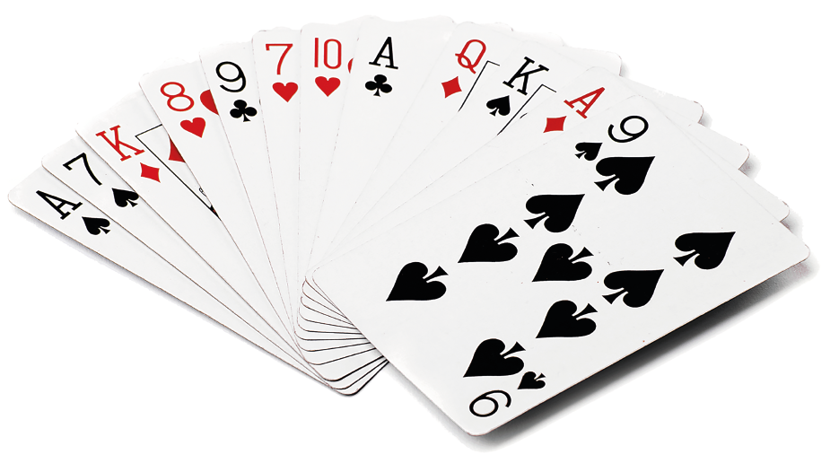
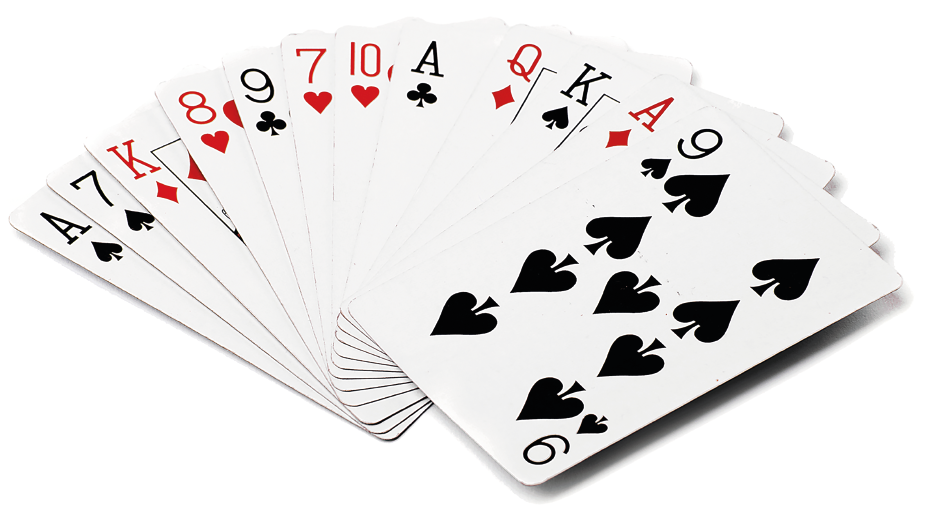

Multi-Player Card Games
Games involving more than one player are enjoyed by millions of players round the world.
Bridge
Contract bridge, or simply bridge, is a trick-taking card game using a standard 52-card deck. It is played by four players in two pairs who sit opposite each other around a table. Millions of people play bridge worldwide in clubs, tournaments, online and with friends at home, making it one of the world's most popular card games, particularly among seniors. The World Bridge Federation (WBF) is the governing body for international competitive bridge, with numerous other bodies governing bridge at the regional level.
The game consists of several deals, each progressing through four phases. The cards are dealt to the players, and then the players bid to take the contract, specifying how many tricks the partnership receiving the contract (the declaring side) needs to take to receive points for the deal. During the bidding partners use the bids to communicate information about their hand to their partner. The cards are then played, the declaring side trying to fulfil the contract. The scored is based on the number of tricks taken, the contract, and various other factors.
Hearts
Hearts is an "evasion-type" trick-taking playing card game for four players, although variations can accommodate 3 to 6 players. The game is also known as Black Lady or and Black Widow, though any of these may refer to the similar but differently-scored game Black Lady. The game is a member of the Whist family of trick-taking games (which also includes Bridge and Spades), but the game is unique among Whist variants in that it is an evasion-type game; players avoid winning certain penalty cards in tricks, usually by avoiding winning tricks altogether.
Players who fail to avoid the penalty cards are given a score of 10 points for the Queen of spades, 5 for the Ace, 4 for the King, 3 for the Queen, 2 for the Jack of hearts and 1 for every other heart card. Players are eliminated when they reach a number of agreed points
Gin Rummy
A two-player game, the objective in gin rummy is to score points and reach an agreed number of points before your opponent.
The basic game strategy is to improve your hand by forming melds and eliminating unwanted cards. A meld is either 3 or 4 cards sharing the same rank (e.g. three 8s or 4 jacks) and runs of 3 or more cards in sequence, of the same suit (e.g. 4,5 and 6 of hearts). Intersecting melds are not allowed. Aces are considered low. A player can form any combination of melds within their hand. A hand can contain three or fewer melds to knock or form legal gin.
A player can whose unwanted cards total less than 10 points (aces are 1, all face cards are 10) may 'knock'. At this point they lay their cards face down. The other player can use the knockers cards to complete melds. The game score is the difference in the score between the knocker and other player. Gin (a hand completely comprising melds) gains an extra 25 points.